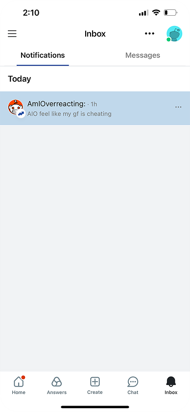
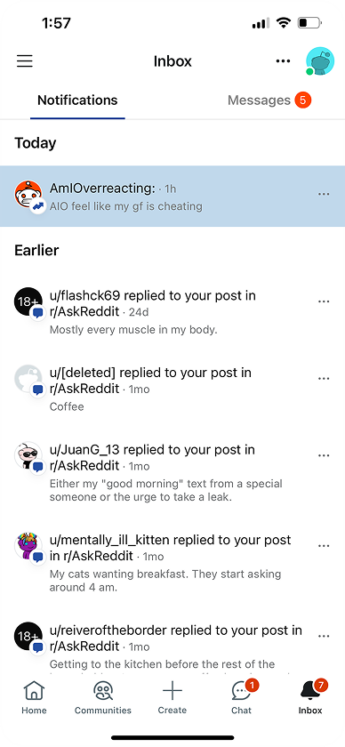

NEW user

“I don’t know where to start”
Casual visitor

“I don’t care about these updates”
Regular

“Where is my stuff??”
“I don’t know where to start”

“I don’t care about these updates”

“Where is my stuff??”